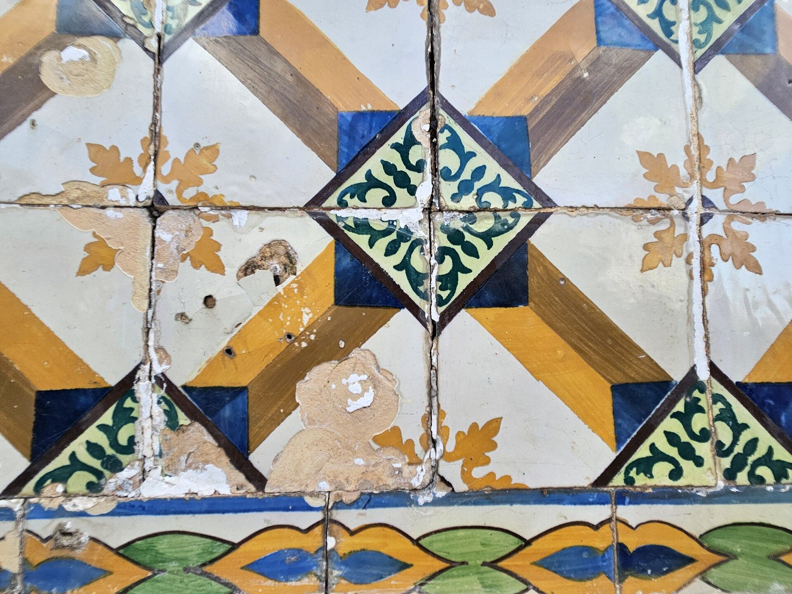

Casa
A porta
continua aberta
N'O Frade tudo continua como gostamos: boa comida, bons vinhos e gente à volta do balcão.
Esperamos por si na Calçada da Ajuda, 14, em Belém. Para reservar, use o botão Reservar mesa, ligue para o +351 939 482 939 ou escreva para fraderestaurante@gmail.com.
- Morada
- Calçada da Ajuda 14
- Telefone
- +351 939 482 939
- @restauranteofrade
